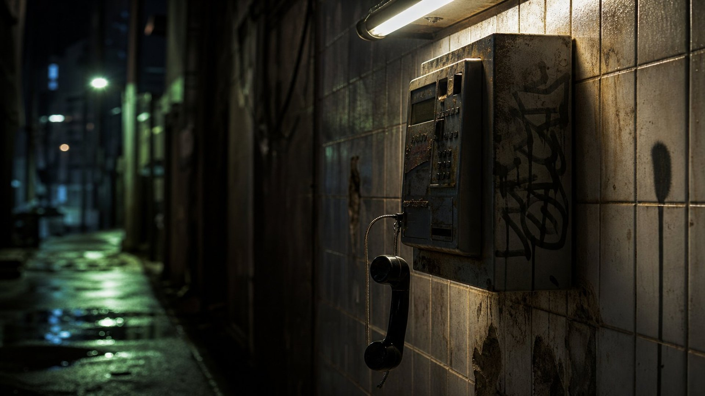

S4 · G5 · Triches
Codes et triches
Rockstar n'a publié aucun code de triche pour GTA VI. Toutes les « listes complètes » en circulation recyclent les codes de GTA V, et certains n'auraient même plus de sens avec le nouveau système de recherche.
Zéro code officiel
Au 18 novembre 2026, Rockstar n'a publié aucune combinaison de manettes, aucun numéro de téléphone et aucune commande clavier pour GTA VI.
CHE-14 Toute page qui affiche une « liste complète des codes de GTA VI » publie en réalité des codes de GTA V — ou invente.
Ce qui est établi
- Aucun code publié au 18/11/2026.
CHE-14 - Tous les GTA principaux depuis GTA III ont eu des triches : la série a l'habitude.
CHE-15 - Le format d'entrée dans GTA VI n'est pas documenté.
CHE-18
Ce qui n'est pas établi
- Qu'il y aura des triches dans GTA VI.
- Qu'elles prendront la forme d'un numéro de téléphone.
- Qu'elles bloqueront les trophées.
CHE-19
Pourquoi les listes circulantes sont des codes de GTA V
Les sites qui affichent des combinaisons PS5 et des numéros 1-999 pour GTA VI n'ont aucune source primaire. On y reconnaît, mot pour mot, les codes de GTA V.
| Effet annoncé | Numéro (GTA V) | Commande PC (GTA V) | Statut pour GTA VI |
|---|---|---|---|
| Invincibilité temporaire | 1-999-724-654-5537 | PAINKILLER | ESTIMATION |
| Santé et armure maximales | 1-999-887-853 | TURTLE | ESTIMATION |
| Armes et munitions | 1-999-866-587 | TOOLUP | ESTIMATION |
| Une étoile de moins | 1-999-529-93787 | LAWYERUP | ESTIMATION |
| Une étoile de plus | 1-999-384-48483 | FUGITIVE | ESTIMATION |
Ces numéros et commandes sont reproduits uniquement pour identifier la source de la confusion. Ce guide ne les présente pas comme des codes de GTA VI. CHE-17
Comment vérifier un code, sans se faire avoir
- Exiger une source primaire : Rockstar Newswire, support officiel, ou une capture faite dans le jeu à jour.
- Se méfier des listes complètes publiées avant la sortie : elles ne peuvent pas exister.
CHE-14 - Comparer avec GTA V : si la combinaison est identique à 2013, c'est probablement du recyclage.
CHE-17 - Tester sur une sauvegarde dédiée : si les triches désactivent les trophées comme dans GTA V, la sauvegarde principale est préservée.
CHE-19 - Vérifier la date de la page : une page non datée n'a aucune valeur sur un sujet qui change au lancement.
En attendant, les vrais leviers
Si l'objectif est de gagner du temps ou de la puissance, ces mécaniques existent, elles, et sont documentées.
Le coffre-arsenal
Le moyen documenté d'avoir l'arme lourde au bon moment. Voir Armes
Le brouilleur de traceur
Coupe le suivi du véhicule volé, alternative légitime aux triches de police. Voir Véhicules
La tenue de rechange
Efface un identifiant de recherche entier. Voir Police
Ce que cette page affichera après le 19/11/2026
- Uniquement des codes vérifiés en jeu, avec plateforme, version et date de test.
- Le format d'entrée réellement utilisé par GTA VI, s'il est confirmé.
- L'effet mesuré sur les trophées et les succès.
EN ATTENTE · 19/11 Aucun code ne sera publié ici sans test reproductible.
